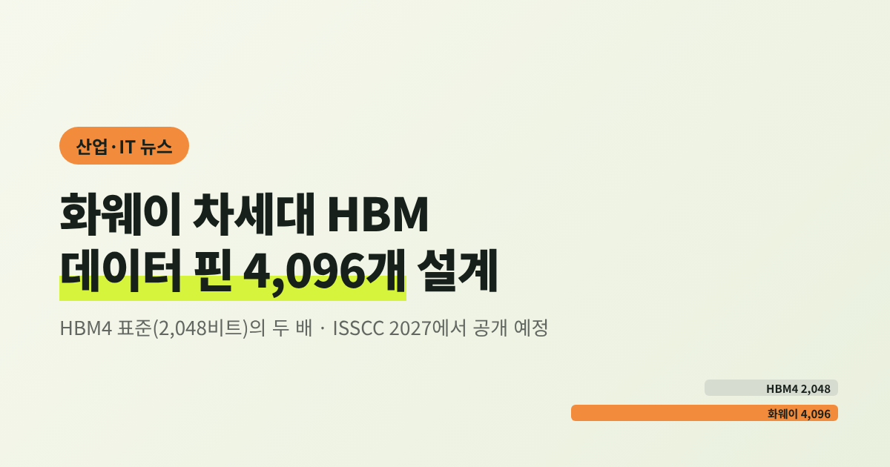
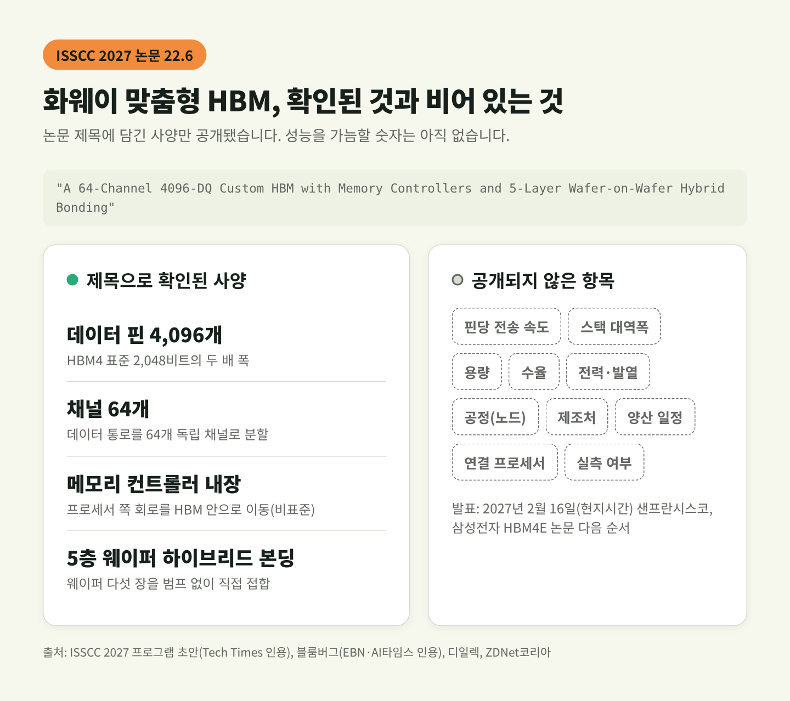
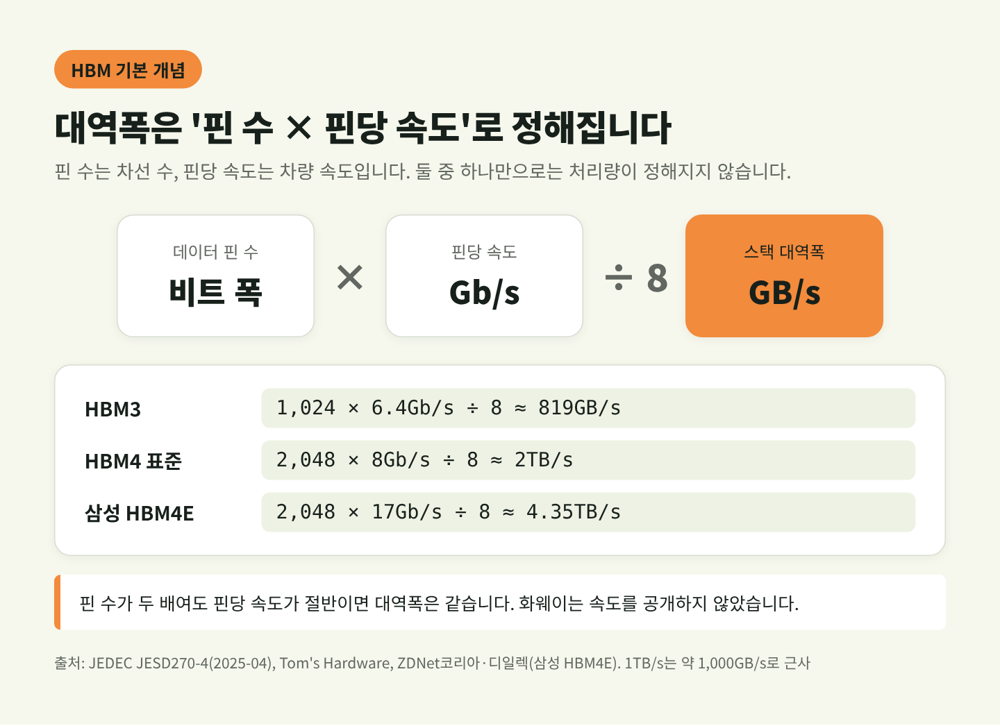
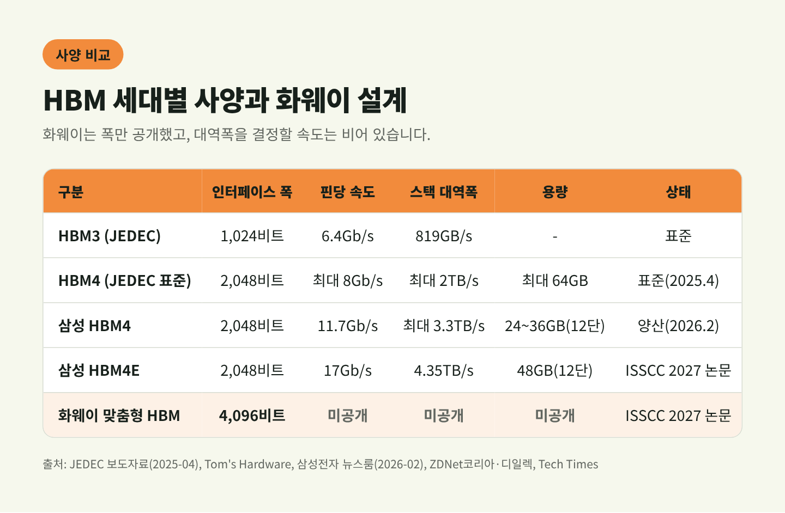
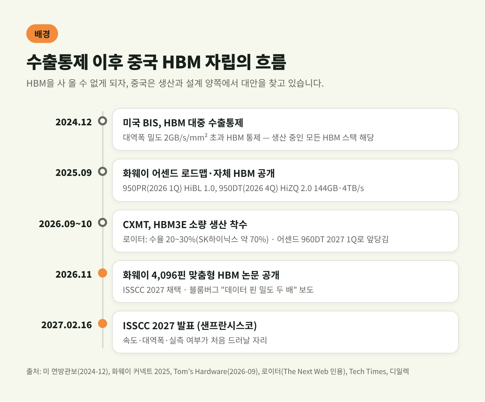
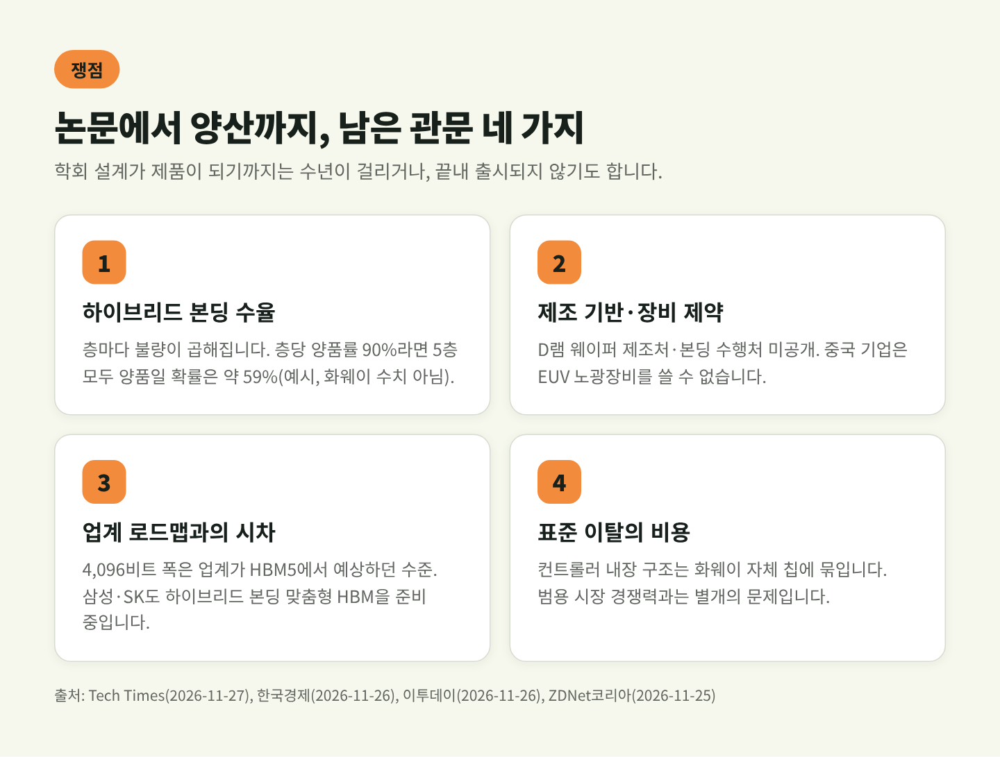

화웨이 차세대 HBM, 데이터 핀 HBM4 두 배 설계의 의미와 한계

이번 글에서는 화웨이가 내년 2월 반도체 학회 ISSCC 2027에서 공개할 차세대 HBM 설계를 정리해 보겠습니다. 보도된 사양이 무엇이고, 그 숫자가 실제로 무엇을 뜻하는지, 한국 메모리 산업에는 어떤 신호인지 차례로 짚습니다.
3줄 요약 - 화웨이 연구진이 데이터 핀(DQ) 4,096개짜리 맞춤형 HBM 논문을 ISSCC 2027(2027년 2월 16일 발표)에 올렸습니다. JEDEC HBM4 표준(2,048비트)의 두 배 폭입니다. - 다만 핀당 속도·대역폭·용량·수율은 하나도 공개되지 않았습니다. 핀 수가 두 배라고 성능이 두 배라는 뜻은 아닙니다. - 미국 수출통제로 HBM 수입이 막힌 중국의 '자립 시도'로 읽는 것이 정확합니다. 양산까지는 하이브리드 본딩 수율과 제조 기반이라는 큰 관문이 남아 있습니다.
■ 무슨 일이 있었나
출발점은 논문 제목 한 줄입니다.
11월 25일 서울에서 열린 ISSCC 2027 채택 논문 기자간담회에서, 화웨이가 메모리 세션에 '5단 웨이퍼 하이브리드 본딩 맞춤형 HBM' 논문을 냈다는 사실이 먼저 알려졌습니다(디일렉, ZDNet코리아). 이튿날 블룸버그가 학회 제출 기록을 근거로 "삼성전자·SK하이닉스 양산품보다 데이터 핀 밀도가 두 배인 HBM"이라고 보도했고, 한국경제·EBN·이투데이·디지털투데이·AI타임스 등이 이를 받아 썼습니다. 화웨이는 블룸버그의 질의에 답하지 않았습니다.
Tech Times가 학회 프로그램 초안에서 옮긴 제목은 이렇습니다. "A 64-Channel 4096-DQ Custom HBM with Memory Controllers and 5-Layer Wafer-on-Wafer Hybrid Bonding." 풀어 쓰면 다음 네 가지입니다.
- 데이터 핀 4,096개: 한 번에 4,096비트를 주고받는 통로입니다. HBM4 표준은 2,048비트입니다.
- 채널 64개: 데이터 통로를 64개 독립 채널로 나눴습니다.
- 메모리 컨트롤러 내장: 원래 프로세서 쪽에 있던 메모리 관리 회로를 HBM 안에 넣었습니다.
- 5층 웨이퍼-온-웨이퍼 하이브리드 본딩: 웨이퍼 다섯 장을 범프 없이 구리끼리 직접 붙였습니다.
발표는 2027년 2월 16일(현지시간) 샌프란시스코 'SRAM, HBM and DRAM' 세션입니다. 공교롭게도 삼성전자의 HBM4E 논문 바로 다음 순서입니다. 국내에서 '정면승부'라는 표현이 나온 배경이 여기에 있습니다.

■ 핀이 두 배면 성능도 두 배일까
결론부터 말씀드리면, 그렇지 않습니다.
HBM(고대역폭 메모리)은 D램을 수직으로 쌓고, 아주 많은 데이터 핀으로 프로세서와 연결한 메모리입니다. 얼마나 빨리 데이터를 퍼 나르는지, 즉 대역폭은 간단한 곱셈으로 정해집니다.
대역폭(바이트/초) = 데이터 핀 수 × 핀당 속도 ÷ 8
핀 수는 '차선 수', 핀당 속도는 '차량 속도'에 비유할 수 있습니다. 차선을 두 배로 늘려도 차가 느리면 처리량은 그대로입니다.

JEDEC가 2025년 4월 발표한 HBM4 표준(JESD270-4)은 2,048비트 폭, 스택당 32채널, 핀당 최대 8Gb/s로 스택당 최대 2TB/s를 정했습니다. 직전 HBM3는 1,024비트에 6.4Gb/s, 스택당 819GB/s였습니다. 세대가 바뀔 때마다 폭이 두 배씩 넓어진 셈입니다.
예전엔 폭을 넓히는 것이 세대 교체의 상징이었습니다. 지금 경쟁의 중심은 핀당 속도입니다. 삼성전자는 올해 2월 양산 출하한 HBM4에서 핀당 11.7Gb/s, 스택당 최대 3.3TB/s를 내세웠습니다. 같은 ISSCC 세션에서 발표할 HBM4E는 12단 48GB, 핀당 17Gb/s, 대역폭 4.35TB/s입니다(ZDNet코리아, 디일렉).
화웨이 설계에 같은 공식을 대입해 보겠습니다. 아래는 공개된 핀 수에 속도를 가정해 넣은 계산일 뿐, 화웨이가 밝힌 수치가 아닙니다.
- 핀당 4Gb/s라면 → 약 2TB/s (HBM4 표준 최대치와 비슷)
- 핀당 8Gb/s라면 → 약 4TB/s
- 핀당 약 8.5Gb/s 이상이어야 → 삼성 HBM4E(4.35TB/s)와 같아짐
즉 화웨이가 핀당 속도를 삼성 HBM4E의 절반 수준만 내도 대역폭은 비슷해집니다. 반대로 속도가 낮다면, 넓은 폭은 느린 속도를 메우는 수단에 그칩니다. Tech Times도 4,096핀을 64채널로 나누면 채널당 64핀으로 HBM4와 같다고 계산했습니다. '두 배'는 채널 수를 늘린 결과라는 해석입니다.

■ 왜 주목받는가 — 수출통제가 만든 공백
이 논문이 단순한 학술 발표 이상으로 읽히는 이유는 중국이 놓인 처지 때문입니다.
미국 상무부 산업안보국(BIS)은 2024년 12월 규정에서 '메모리 대역폭 밀도가 mm²당 2GB/s를 넘는' HBM을 통제 대상으로 묶었습니다. 규정 원문은 "현재 생산 중인 모든 HBM 스택이 이 기준을 넘는다"고 적었습니다. 그 결과 삼성전자·SK하이닉스·마이크론은 중국 고객에게 HBM을 팔 수 없고, 중국이 미리 쌓아둔 해외산 재고도 줄고 있습니다.
화웨이의 AI 가속기 '어센드'는 이 공백 한가운데 있습니다. 화웨이는 2025년 9월 화웨이 커넥트에서 어센드 950PR(2026년 1분기), 950DT(2026년 4분기), 960(2027년 4분기), 970(2028년 4분기)으로 이어지는 로드맵을 공개했습니다. 950PR에는 자체 HBM 'HiBL 1.0'을, 950DT에는 144GB·4TB/s의 'HiZQ 2.0'을 쓴다고 밝혔습니다. 올해 9월 갱신된 로드맵에서는 960DT를 2027년 1분기로 세 분기 앞당겼고, 288GB·9.6TB/s를 제시했습니다(Tom's Hardware).
문제는 메모리를 어디서 구하느냐입니다. 9월에는 화웨이·캠브리콘이 HBM 부족을 이유로 AI칩 가격을 20~50% 올렸다는 보도가 나왔습니다(AI타임스, 로이터 인용). 11월 초 디인포메이션은 960DT가 상당 부분 밀수된 삼성·SK 메모리에 의존할 것이라고 보도했습니다. 다만 이는 익명 소식통에 기댄 단일 보도이고, 두 회사는 수출 규정을 지킨다고 밝혔습니다.
화웨이가 HBM 설계에 직접 뛰어든 것은 이 흐름의 연장선입니다. 메모리를 사 올 수 없다면, 자기 칩에 맞춰 설계부터 다시 하겠다는 계산으로 보입니다.

■ 맞춤형 HBM, 화웨이만의 길은 아니다
'컨트롤러 내장'과 '하이브리드 본딩'은 화웨이만의 아이디어가 아닙니다.
JEDEC 표준에서는 메모리 컨트롤러가 프로세서 쪽에 있습니다. 화웨이 설계는 이를 HBM 안으로 옮겼습니다. 표준에서 벗어난 '맞춤형(custom) HBM'이라는 뜻입니다. 표준 호환성을 포기하는 대신, 자사 어센드 칩에 최적화할 수 있습니다. 다만 학회 목록에는 어떤 프로세서와 함께 쓰는지조차 나와 있지 않습니다.
한국 기업도 같은 방향으로 가고 있습니다. 삼성전자는 같은 세션에서 4나노 공정 기반 맞춤형 HBM용 인터페이스 칩 논문도 발표합니다. ZDNet코리아가 인용한 서울대 교수는 삼성과 SK하이닉스가 미국 빅테크용 맞춤형 HBM에 하이브리드 본딩을 상용 수준으로 적용하고 있다고 전했습니다. 같은 세션에서는 SK하이닉스와 중국 CXMT가 각각 웨이퍼 본딩을 쓴 수직게이트 DDR5를 내놓습니다. 업계 전체가 '웨이퍼째 붙이는' 기술로 모여들고 있습니다.
ISSCC 2027의 판도도 눈여겨볼 만합니다. 역대 최다인 1,029편이 투고됐고, 채택 논문 가운데 중국이 124편(45.3%)으로 가장 많았습니다. 미국은 49편, 한국은 45편입니다. 메모리 분야만 보면 한국이 28편 중 12편으로 1위, 중국은 8편입니다(디일렉). 한 서울대 교수는 과거 중국 업계가 기술 차용 논란을 피하려 학회 발표를 꺼렸는데, 이제 공개 발표에 나섰다는 점을 자신감의 신호로 해석했습니다.
■ 한국 기업과의 격차, 어떻게 봐야 하나
현재 숫자로 보면 격차는 분명합니다.
카운터포인트리서치에 따르면 올해 2분기 HBM 매출 점유율은 SK하이닉스 50%, 삼성전자 33%, 마이크론 18%입니다. 세 회사는 이미 HBM4를 양산하고 있습니다. 삼성은 5월 HBM4E 12단 샘플을 출하했고, SK하이닉스는 2027년 HBM4E 양산을 목표로 합니다(EBN).
중국 메모리의 맏형 CXMT는 아직 그 전 세대인 HBM3E에 머물러 있습니다. 로이터는 10월 CXMT의 HBM3E 수율이 20~30%로, SK하이닉스(약 70%)의 절반에도 못 미친다고 전했습니다. 시험 성능도 SK하이닉스의 구형 HBM3에 가까웠다는 소식통 발언이 함께 나왔습니다. 화웨이 자체 HBM 역시 HBM4보다 성능이 떨어진다는 평가가 나옵니다(한국경제).
그렇다고 가볍게 넘길 일은 아닙니다. 중국은 HBM을 수입할 수 없기 때문에, 성능이 다소 뒤처져도 국산 HBM에 확실한 내수 시장이 있습니다. CXMT는 범용 D램 점유율을 1분기 7.6%에서 2분기 9.6%로 끌어올렸습니다(TrendForce, EBN 인용). KAIST 교수는 블라인드 심사에서 삼성·SK·CXMT 논문을 구분하기 어려웠다고 말하면서도, 논문으로 입증하는 것과 양산은 다르다고 선을 그었습니다(ZDNet코리아).
정리하면, 당장 한국 기업의 시장을 위협하는 수준은 아닙니다. 다만 설계 아이디어의 격차는 생각보다 빨리 좁혀지고 있다는 점, 그리고 중국 내수 시장이 한국 기업에서 점점 멀어지고 있다는 점은 분명한 신호입니다.
■ 양산까지 남은 관문
학회 논문과 양산 제품 사이에는 긴 거리가 있습니다. 한국경제가 인용한 업계 관계자는 "학회에서 발표한 설계를 실제 구현해 양산하기까지 수년이 걸릴 수도 있다"며, 끝내 출시되지 않는 경우도 있다고 했습니다.
화웨이 설계가 넘어야 할 산은 크게 네 가지입니다.
- 하이브리드 본딩 수율: 층을 쌓을수록 불량이 곱해집니다. Tech Times의 예시대로 층마다 양품률이 90%라면, 다섯 층이 모두 양품일 확률은 약 59%입니다. 화웨이의 실제 수치는 아닙니다.
- 제조 기반: 화웨이의 D램 웨이퍼를 누가 만들고, 본딩을 어디서 하는지 공개된 정보가 없습니다. 중국 기업은 첨단 칩 제조에 필수인 EUV 노광장비도 쓸 수 없습니다(이투데이).
- 업계 로드맵과의 시차: 4,096비트 폭은 업계가 HBM5에서 예상하던 수준입니다. 하이브리드 본딩도 HBM4E·HBM5부터 본격 도입될 것으로 전망됩니다. 화웨이가 한 세대 앞선 구조를 논문으로 먼저 보인 것은 의미가 있지만, 한국 기업도 같은 지점을 향해 가고 있습니다.
- 표준 이탈의 비용: 컨트롤러를 내장한 맞춤형 구조는 화웨이 자체 칩에 묶입니다. 범용 시장 경쟁력과는 다른 이야기입니다.
또 하나, 미국 수출통제는 핀 수가 아니라 대역폭 밀도로 HBM을 판단합니다. 화웨이 설계가 어느 수준인지 평가하려면 스택당 대역폭과 면적이 필요한데, 둘 다 공개되지 않았습니다.

■ 앞으로 지켜볼 것
첫 확인 지점은 2027년 2월 16일입니다. ISSCC는 2월 14~18일 샌프란시스코에서 열리고, 화웨이 논문은 이날 오후 삼성 HBM4E 다음 순서로 발표됩니다.
이때 확인해야 할 숫자는 분명합니다.
- 핀당 전송 속도와 스택 대역폭: '두 배'가 실제 성능으로 이어지는지 판가름합니다.
- 실제 칩 측정 결과 여부: 시뮬레이션인지, 제작한 칩을 측정한 것인지가 중요합니다.
- 5개 층의 구성과 공정: D램인지 로직인지, 어느 공정에서 만들었는지.
- 어센드와의 연결: 2027년 출시 예정인 어센드 960 계열에 이 구조가 들어가는지.
이후로는 CXMT의 HBM3E 수율 개선 속도, 어센드 960DT의 메모리 조달 방식, 그리고 삼성·SK하이닉스의 HBM4E 양산 일정이 함께 맞물려 움직일 것입니다.
정리하면 이렇습니다. 화웨이의 4,096핀 HBM 설계는 '추월'의 증거라기보다, 수출통제로 막힌 길을 설계로 돌아가려는 시도에 가깝습니다. 성능을 가늠할 핵심 숫자는 아직 비어 있고, 양산까지의 관문도 높습니다.
— 넓어진 통로보다, 그 통로를 얼마나 빠르고 많이 채울 수 있느냐가 진짜 승부입니다.
중국 메모리가 한국을 따라잡았냐고 물으신다면, 아직은 아니라고 답하겠습니다. 다만 내년 2월 이후에는 그 답을 다시 살펴봐야 할 것입니다.
참고자료
- AI타임스 — 화웨이, 삼성·하이닉스에 도전…HBM4 대비 데이터 핀 두배 설계 (2026-11-27)
- 한국일보 — 삼성·SK하닉 추격하는 中 화웨이…HBM4 데이터통로 두 배 넓혀 (2026-11-27)
- 한국경제 — 화웨이, 차세대 HBM 기술 공개 눈앞 (2026-11-26)
- EBN — 화웨이, '핀 밀도 2배' 차세대 HBM 공개 예고 (2026-11-26)
- 이투데이 — 中 화웨이, 차세대 HBM 설계 공개 준비 중 (2026-11-26)
- 디지털투데이 — 화웨이, 데이터 핀 밀도 2배 높인 HBM 설계 (2026-11-26)
- 디일렉 — 화웨이 HBM, CXMT는 수직 게이트 D램…ISSCC서 삼성·SK에 도전장 (2026-11-25)
- ZDNet코리아 — 화웨이, 하이브리드 본딩 '맞춤형 HBM' 개발 (2026-11-25)
- 전자신문 — 삼성전자, ISSCC 2027서 '500단대 낸드' 메모리 기술 공개 (2026-11-25)
- Tech Times — Huawei Lists 4,096-Pin HBM Memory for Chip Conference (2026-11-27)
- Interesting Engineering — Huawei targets Samsung, SK Hynix with memory design (2026-11-26)
- JEDEC — JESD270-4 HBM4 표준 발표 (2025-04-16)
- Tom's Hardware — JEDEC finalizes HBM4 memory standard (2025-04-17)
- 삼성전자 뉴스룸 — HBM4 양산 출하 (2026-02-12)
- 화웨이 — Huawei Connect 2025 HC Xu 기조연설 (2025-09)
- Tom's Hardware — Huawei details AI accelerator roadmap (2026-09-18)
- 미 연방관보 — BIS 첨단 컴퓨팅·반도체 수출통제 규정 (2024-12-05)
- The Next Web — CXMT HBM3E 수율 20~30%, 로이터 보도 (2026-10-28)
- The Next Web — Huawei tells some clients to source their own HBM (2026-11-04)
- EBN — 中 CXMT '4F² D램' 도전장…삼성·SK, 초격차 기술로 맞불 (2026-10-15)
- 헤럴드경제 — 카운터포인트 HBM 점유율 (2026-09-03)